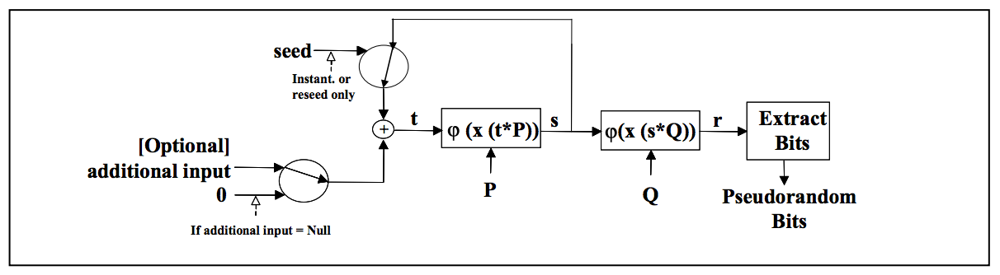

Hello, my name is Jevon Suharnoko. Here you will find my work on AP CSP and its projects
These are my collection of discoveries that I found during my AP CSP course in my senior year. I enjoy coding due to the logic and functions that is closely related to mathematical logic, such as Boolean expressions and functions.
Part of the reason that I took intrest in computer science is the mathematical logic and application within it, such in cryptography and patterns in coding.
The best that I know of Mathematical application in programming is the field of ell
